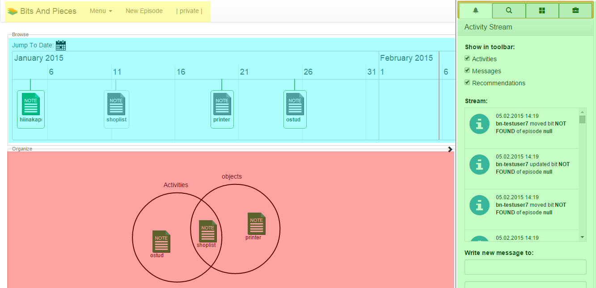
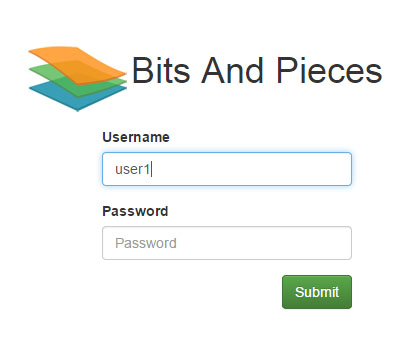
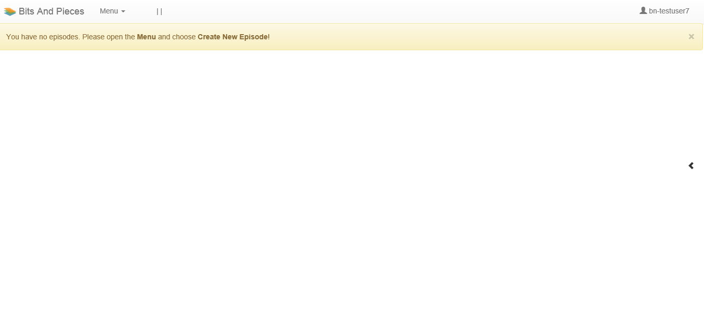
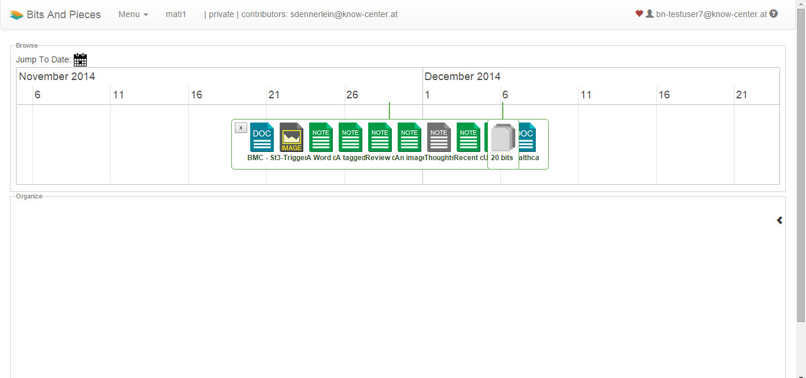
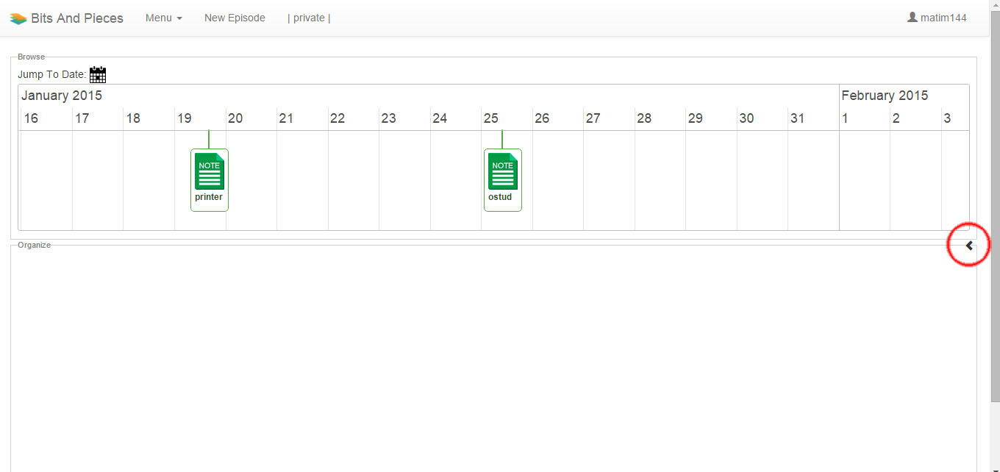
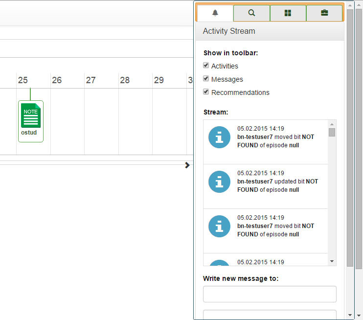
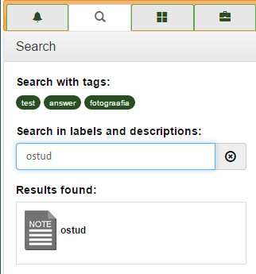
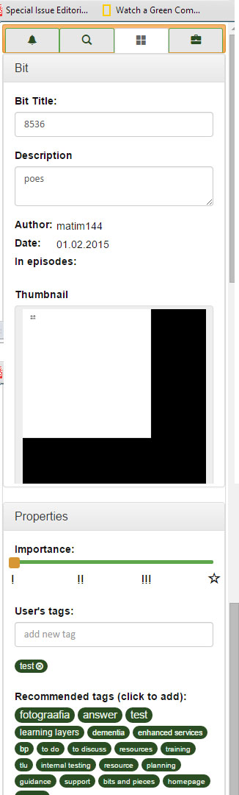
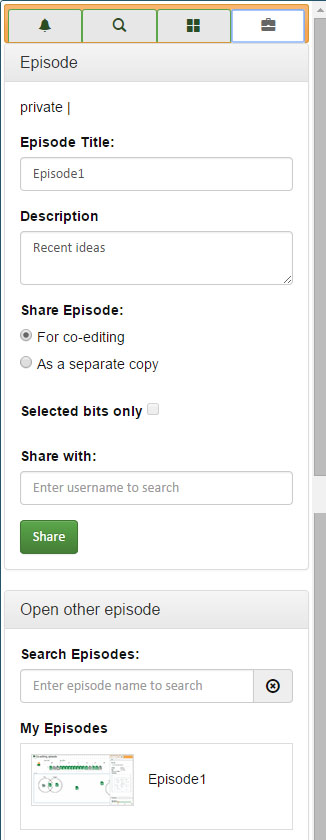
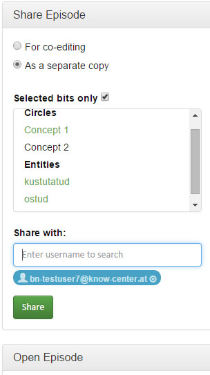

Bits & Pieces
How to
…
More Layers Healthcare Tools FAQs:
http://learning-layers.eu/bits-pieces-faqs/
Overview and General Terminology
Bits & Pieces (B&P) interface (Fig. 1) consists of
work area
, on lower left side which is called
organizer
(red)
.
On the right side
of the view is located
toolbar
(green)
. Toolbar consists of
control
tabs
, that allow to see and manipulate specific information about the items in B&P. Toolbar has 4 control tabs: “Activity Stream”, “Search”, “Bit” and “Episode info”.
Menu
(yellow)
is at the top on the left side.
T
he
timeline
(blue) allows to locate items, called
Bits
, appears immediately under the menu and above the organizer
.
Now and later, all new, specific terminology of B&P will appear in bold-typeface while being explained first time.

Figure 1. General view of interface.
Getting Started
.

Figure 2. Login procedure
The login screen will open and credentials will be asked as depicted above: Fig.2. After first login the empty view will open and creating of new
episode
will be asked: Fig.3.

Figure 3. Initial view
After creating first episode the view of empty episode will appear as shown on Figure 4. The
episode
expresses how the concepts are organized.
At upper right corner are located
help button
(?) and
affect button
(heart) (Figure 5). The help button will open this user manual in a separate tab. The affect button is used for testing purposes, it allows the user to express his/her emotions during the use of B&P. Affect button leads to quick, 3-question
survey, after completing the survey, the usage can be continued. Please, feel free to provide this valuable information whenever You wish!

Figure 4. Working view of B&P.
Figure 5. Help Button (?) and affect button (red heart) and username (at center)
VIDEO FAQ
Episodes
The use of B&P is based on
Episodes.
An episode reflects the mapping of user’s concepts, thus allowing to organize them and help to make sense of collected bits. Episode consists of
timeline and organizer. Timeline contains bits, collected from Evernote. Every new episode will already include all bits, collected by active user.
Organizer is the screen area for editing the concepts.
New episodes can be created via: Menu>Create New Episode.
Unlimited number of episodes can be created
. The episodes can be deleted via red x by the episode name. Confirmation is needed before deleting the episode. Deleting can not be undone. Episodes can be selected for viewing and editing one at a time.
Feeling that displayed information is outdated? Refreshing browser page updates all the information!
VIDEO FAQ
Timeline
Timeline shows the bits in time.
Bits
represent the instances of information on timeline. Bits appear on timeline as the notes on user’s Evernote account, created with Evernote application. However, B&P allows to create a placeholder which behaves on the timeline similarly
to the bits.
Placeholder
is an instance of information on timeline, created in B&P itself. Placeholder behaves similarly to a normal bit, but it exists only in B&P, not in Evernote. Placeholder has a name and description. Description is a text which can contain
up to 10000 characters. Placeholder can be created via “Menu > Create New Placeholder”, where the name and description will be added. Refreshing the browser may be needed to show newly created placeholder. Placeholder will have a
location in timeline, according to its creation time. Placeholders name and description can be changes similarly to bits attributes. Placeholder can not be deleted and its time can not be changed.
NB! All bits on the timeline are displayed from Social Semantic Server, not directly from Evernote. Server synchronizes with evernote every hour, meaning, that freshly created notes will not immediately become bits on the timeline!
Timeline can be navigated via zooming and moving. The extent of timeline is from the end of current year back to 2 previous years. Zooming range is limited from 1 hour to 1 year.
Timeline functionality:
-
Zooming the timeline can be done by mouse wheel or 2-finger gestures on touch-pad.
-
Moving back and forth in time can be done by grabbing the timeline with mouse or on touch-pad.
-
Bits are organized (gathered) into
bu
ndles according to it’s appearance time. If timeline is zoomed out then neighbouring bits that are located too close to each other, will appear as single bundle, with an indication of number of bits, it contains. Content of bundles can be
extracted by clicking on it and closed again by clicking on x-symbol on left side. Second option to extract a bundle is to zoom timeline out, until the bits will appear apart enough to be displayed separately.
-
Selecting the bit: click on bit. Bits can be selected only one at a time
, no multiple selection.
-
Opening the bit in Evernote web-browser application can be done by double clicking on the bit. As a bit can contain different type of data(picture, document, link, etc.), it will then open depending on data type, according to web browser configuration.
In case it is a weblink, it will open in new window. For downloadable files, the target will be downloaded according to browser configuration.
-
Jumping to desired date can be done by selecting a date from pop-up calendar at upper left of timeline.
VIDEO FAQ
Organizer
Concepts
are circles or “bubbles” in organizer area that are used to organize the information, represented by bits. When bits are moved into circle, they snap to that circle. Moving the circle moves all of its content. Deleting the circle
erases it’s content.
-
Creating a concept - double click in organizing view, initial names (e.g Concept1) are given.
-
Selecting a concept - click on a concept
-
Deleting a concept - use del or backspace key.
-
Labeling (renaming) concept- click on concept’s name and edit in appearing window.
-
Moving the concept label - drag the label. The label can be moved in limited proximity around the circle and anywhere inside the circle.
-
Manipulating the circle - Click on circle and resize it by dragging from the corner. Move the circle by dragging it.
-
(Re-)arranging Bits / Transferring them from timeline into organizer - Drag and Drop corresponding Icons. Bits can be dragged to organizer from timeline or also directly from search results. It is possible to have several instances of the same bit
in organizer. Bits can be selected only one at a time.
-
Removing a bit from concept: select a bit and use delete or backspace key. NB! Removing a bit from concept does not delete it from timeline!
-
(Re-)arranging concepts - Drag and drop it.
-
Circles can overlap. The bits in overlapping area belong to both circles, allowing to connect the circles. Circles with overlapping content are locked to each other and can't be moved separately, though, overlapping circles can be resized. To
unlock them remove bits from overlapping area.
Toolbar
Toolbar can be used to manipulate properties of bits, to proceed the search and organize the episodes. Toolbar is initially hidden and will slide open by clicking on little mark at center of right edge Fig 6.

Figure 6. Toolbar in “hidden” position

Figure 7. Toolbar in “open” position, with activity stream tab visible.
-
Activity Stream
tab (Fig. 7) contains episode activities. Activity stream indicates all activities concerning current episode. Following notification icons are available:
-
Addition (icon: “+”)
-
adding a bit/ bits
-
adding a circle/circles and a respective label/labels
-
Deletion (icon: “-”)
-
deleting a bit/bits
-
deleting a circle/circles
-
Updating (icon: “i”)
-
changing a label/labels
-
Notifications about remote activities (icon “bell”)
Activity Stream allows to check, what activities will be shown. The label “show in toolbar” with three check boxes:
-
activities - shows user activities
-
messages - shows message activity
-
recommendations - shows recommended bits
NB! To refresh the activities list use the refresh button above the activities view.
Activity Stream allows to sending text messages to other users (limited to 300 characters). Recipients’ list appears when typing is started, showing existing users that match the typed phrase.
-
Search tab
(Fig. 8) uses the name, description or a tag of the bit and outputs the name of the bit in results box. The bit information can be viewed in bit properties tab by clicking on result. At the same time
the bit will be located on timeline
. Search works by hitting enter. NB!:
-
Searching simultaneously several tags returns a result which contain both tags (“AND”). The same happens when searching simultaneously tags and labels/descriptions. Exact phrase will be searched and the search IS NOT case sensitive.

Figure 8. Search tab
-
Bit properties
tab (Fig.9) shows the information about
the selected
bit. Only one bit can be selected at once. Bit properties tab opens automatically after the bit is selected. The bit properties tab allows:
-
Bit title
- edit bit title by entering new name into “Bit title” field
-
Bit description
- edit bit description by entering new name into “Bit description” field
-
Author
- displays the author name of selected bit
-
Date
- displays the date created of selected bit
-
Episodes
- displays the episodes, in which selected bit is being used. Clicking the episode name opens this episode.
-
Thumbnail
shows a visualisation of bit’s content
-
Importance
indicates and allows to change bit’s rating on 4p-scale. (“!” is default)
-
importance is public indicator, collaborators will see your assessment
-
importance can be changed by collaborators, it can not be locked by user
-
User’s
tags
allows to add new tag to the selected bit by entering the phrase into “add new tag” field. All assigned tags of selected bit
appear under the
“add new tag” field.
Tagging locations
: same as normal tagging, but with an asterisk “*” before the tag phrase. This feature can be used in Evernote and B&P e.g: *Paris, *New York, *Tallinn University
-
Recommended tags
display tag recommendations for selected bit. Adding a tag happens via clicking on the tag.

Figure 9. Bit tab.
-
Episode properties
tab (Figure 10 right) indicates the active episode. It has following functionality:
-
Episode Title
- displays the title of active episode and allows to edit it.
-
Episode description
- displays the description of active episode and allows to edit it.
-
Share the episode
- includes two types of sharing. Both cases have the window “Share with”, allowing to type in the name of the user to share with. Existing usernames, matching the phrase, will be displayed as the typing was started. To complete
sharing, the “Share” button must be pressed.
-
Sharing for co-editing
allows to s
hare the episode among other users for co-editing or as a separate copy.
-
Sharing as separate copy
allows to share only selected bits. Selecting these bits can be done in additional window which opens after check box “selected bits” is checked. Concepts (circles) and Entities (bits or placeholders) can be selected for inclusion
via clicking.
-
Search the episodes -
allows to search the episodes user has access, either owned or shared, by its names. This is useful when having many episodes to control.
-
My Episodes
-
Select the episodes from the list
activates this episode. NB! Opening the shared episode requests to allow editing via clicking “request editing lock” This action locks the episode to avoid being edited simultaneously by other users. Editing can be released again
via clicking “release editing lock”
Sharing the Episode (additional information)
An episode can be shared among collaborators, but only one partner can edit the episode at a time.
Editing lock
is employed to avoid accidental simultaneous edits. Editing lock will automatically disengage after 5 minutes of inactivity, 5 minutes after leaving the episode or closing the session. Pressing of button while episode is locked updates the organizing
view. So, if the partner has done a change in episode, you can see it via pressing the edit button.
-
time lock is released after 5 minutes, when episode is changed and browser tag is closed


Figure 10. Episode tab (right). Sharing as separate copy with selected bits.
VIDEO FAQ
Hints of Using Evernote
Here are some useful features of Evernote. Use them wisely!
Web clipper
allows to create notes from web page. It should be used as follows:
-
Specify title > give tags > choose kind of clipping:
-
full page,
-
URL or
-
article (use the arrow keys to specify the excerpt to be clipped)
-
Slogan:
never save whole page except
all of the content
is needed
; please choose exactly what is of interest:
-
Element of the page e.g article
-
The homepage itself e.g URL, link
Email in
is used to create notes from sent e-mail messages.
To do that, the evernote e-mail address is needed (click on the email address in the top right > account settings > “Email notes to”).
-
When forwarded, reduce email to the necessary: e.g. delete signatures and header and just keep the interesting elements.
For additional information see
Evernote help
or ask us
!